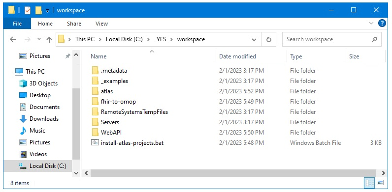
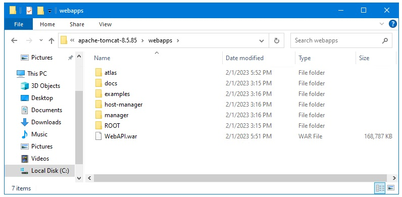

Ponos Quick Start Guide: Download and Install Github Projects
Download and Run the install-atlas-projects .bat File
NOTE: This process takes a little bit of time because it needs to install Every. Single. Solitary. Dependency. for these projects.
Download the bat file that downloads, builds, and deploys the Atlas resources from the link below.
Download the install-atlas-project.bat file
Move this file to C:\_YES\workspace.
Run this bat file from a cmd prompt.
When the build is finished you should have the following projects in C:\_YES\workspace.
Each of these project should have a full build in there "target" folder.
There should also be a folder called "atlas" and a file called "WebAPI.war" in
C:\_YES\servers\apache-tomcat\apache-tomcat-8.5.85-windows-x64\apache-tomcat-8.5.85\webapps
- Atlas
- WebAPI
- fhir-to-omop

There should also be a folder called "atlas" and a file called "WebAPI.war" in
C:\_YES\servers\apache-tomcat\apache-tomcat-8.5.85-windows-x64\apache-tomcat-8.5.85\webapps
